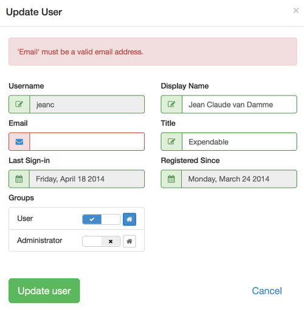
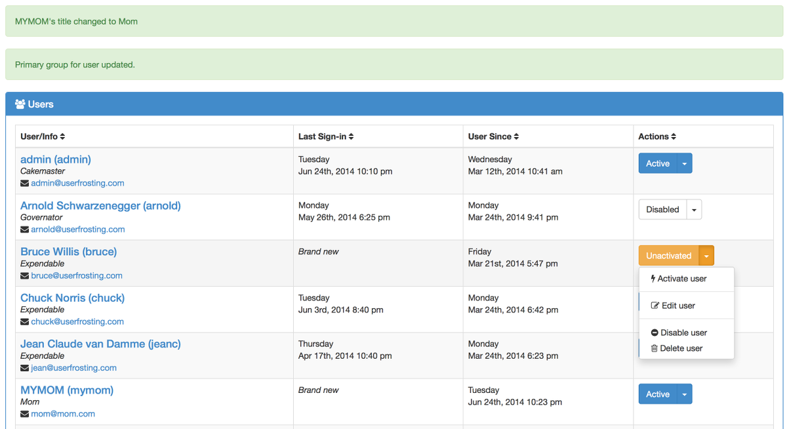

Although UserFrosting does not follow a strict Model-View-Controller (MVC) architecture, it respects the principle of clean separation between data, logic, and presentation. The main boundary in UserFrosting's codebase is between the frontend of the website, which consists of static HTML, Javascript (using jQuery and Bootstrap), and CSS styles, and the backend, which consists of the MySQL database and the PHP code which interacts with the database and executes the logic.
The content which users see is generated by the pages located in the account subdirectory. They consist largely of static HTML, as well as calls to various Javascript functions. Javascript is located in the js subdirectory, and is used for fetching and submitting data to the backend, as well as creating dynamic effects for the frontend content. To communicate with the backend, these functions use AJAX (Asynchronous Javascript and XML), as implemented by the jQuery framework. AJAX calls are made to a set of API pages, which are located in the api subdirectory. These pages accept POST requests for creating, updating, and deleting data, and GET requests for fetching data. Data fetched by GET is returned as a JSON object, which the Javascript functions then parse and render on the frontend pages.
For security and user experience, data submitted by the user must be validated. For example, we might require that passwords be a certain minimum length, or that email addresses contain the @ symbol. Data is validated in two places: on the frontend, so that users can find out why their input is invalid without waiting for a page to reload, and on the backend, so that malicious users cannot bypass the frontend validation to submit potentially destructive data (for more information on destructive data, see the Security section).
On the frontend, validation is done via the validateFormFields function, located in js/userfrosting.js. When this function is called on a form, it checks all submitted values against their validation rules. These rules are specified by the data-validate attribute for the given field. For example,
<input type='text' class='form-control' name='user_title' autocomplete='off' data-validate='{\"minLength\": 1, \"maxLength\": 100, \"label\": \"Title\" }/>
tells us that the field user_title must be at least 1 character and at most 100 characters long. If the form values pass frontend validation, they are submitted to the appropriate backend API page. On the backend, values are rechecked with the corresponding server-side rules, and potentially destructive data is neutralized using PHP's htmlentities. If they fail validation on the backend, an error is pushed to the alert stream and an error code is returned to the frontend.

Errors can occur at any point in the software, from the database all the way up to the frontend. These errors can include runtime PHP errors, database errors, invalid data errors, or server errors. Some errors, such as those raised by validating data, should be conveyed to the frontend user. Others, however, should not be conveyed for security reasons, or should be "genericized" to explain that there was an error but without giving any details. For example, you would not want users to know the details about a bug in your PHP code which they could potentially exploit, but you do want to let them know that something went wrong.
UserFrosting communicates information about errors (and exceptions, which are converted to errors) through the alert stream. This is simply a PHP SESSION variable, which contains of an array of error messages. It also contains an array of "success" messages, for when you want to let a user know that an action was completed successfully. Backend functions can directly add messages to the alert stream through the PHP addAlert function, located in models/funcs.php. These messages can then be accessed through the API page user_alerts.php, and rendered as necessary on frontend pages. Frontend pages can also add messages to the alert stream by POSTing to user_alerts.php. Once messages have been fetched from the stream, they are removed.
Other API pages return an error code, rather than the messages themselves. This is because you may want to reload a page before displaying a message, and thus the alert stream allows messages to persist between page reloads. For example if you create a new user, you may want to reload the list of users and then display a "user successfully created" message.
Users of your site authenticate ("log in") with a unique username and a password. Passwords are hashed via the bcrypt algorithm before being stored in the database. Since hashing is a one-way function, this provides an essential security feature in the event that your database is compromised. If an attacker managed to gain access to your database, they'll have a much harder time recovering your users' passwords from the hashes. UserFrosting also appends a 22-character pseudo-random salt to user passwords, which makes it harder for attackers to reverse engineer passwords based on known hashes. For more information, see the "Security" section.
UserFrosting can also be configured to allow logging in with the user's email address instead of their username. This makes it a little easier for your users, since they don't have to remember an additional piece of information. However email addresses are by definition public pieces of information, making them slightly less secure than a username, which could be kept secret. This is a tradeoff you must consider based on the purpose and target audience of your site.
UserFrosting provides a password recovery mechanism in the event that a user forgets their password. After specifying their username and email address, a user will be emailed a one-time password reset token that allows them to choose a new password. Reset tokens expire after a certain period of time. The default is 3 hours, but this can be changed in "site settings."
Once logged in, different users can be given permission to access different resources (such as pages) and perform different actions. For example, you might want to allow a customer the ability to change their avatar image or password, but not their current balance. Or, you might want to allow one user to send a message to another user, but only if they belong to the same group. This is known as authorization.
The most common way that authorization is implemented is through an ACL (**access control list**). In this scheme, every object (files, database entries, etc) in your system is stored along with a list of users and the actions they may perform on that object. For example, an ACL entry might say that user Alice has permission to read and update other users' information. If you wanted to limit Alice's access only to certain profiles, you'd need a separate entry in the ACL for each user she can access ("Alice can read and update Bob's profile information", "Alice can read and update Carlos' profile information", etc).
In practice, systems of even moderate complexity end up requiring long, unwieldy ACLs. For example, every time a new user account is added, you would have to add a new entry to every administrator's ACL in order for the new account to be managed by admins. Furthermore, it is difficult to create context-dependent access control. For example, you might want to allow certain users to download an mp3, but only on Mondays and Fridays. Or, you might want to allow any user with a certain number of posts on a forum to create special announcements. This would be difficult to implement with an ACL.
Rule-based access control solves this problem by saying that a particular user can access a particular resource, subject to certain rules. This provides more flexibility by allowing any computable procedure to be used as a rule, rather than a simple lookup. However, this also means that site managers must have programming expertise and access to the codebase. The code must then be changed whenever a change in authorization rules is required.
UserFrosting attempts to combine the power of rule-based access with the simplicity of ACLs through its secure function feature. Secure functions control user access in terms of the actions they can perform on a given resource/object. These actions include the typical "create-read-update-delete" functions, but can also be extended to other types of actions, like disabling a user account, or linking a user to a group. Individual users, as well as entire groups, can be granted permission to perform certain actions based on certain rules. Rules are implemented in PHP as functions that return a boolean (yes/no) value given some parameters and global attributes of the currently logged in user. For example, isLoggedInUser(user_id) checks to see whether the supplied user_id matches the user_id of the currently logged in user. These functions are called permit validators, and a small set of predefined permit validators are provided in models/authorization.php as member functions of the PermissionValidator class.
Actions are also implemented as PHP functions, and can be found in models/secure_functions.php. The relationships between users (or groups), secure actions, and permits are defined in the user_action_permit and group_action_permit tables. Each row in these tables contains a user_id (or group_id), the function name for a secure action (e.g. deleteUser), and a string of permit function names joined by &. When a secure action is called, it determines whether the user is permitted to perform that action with the specified parameters. It does this via the checkPermissionSelf function, found in models/authorization.php. This function checks the *_action_permit tables for rows that match the action name and the user's user_id, as well as any rows that match the group_id of a group to which the user belongs. For each row found, it runs the specified permit functions, matching the parameters supplied to the secure action with the parameter names in the permit functions. For example, there might be a row that looks like:
| id | group_id | action | permits |
| 9 | 4 | updateUser | isUserPrimaryGroup(user_id,'3')&isLoggedInUserInGroup('3') |
This tells us that users in group 4 can only perform the action updateUser if the user_id of the user they wish to update has a primary group with group_id=3, and they are also a member of group 3. If multiple rows are matched, only one row needs to succeed to permit access. Thus, joining permits via & within a row serves as an AND operation, while having multiple rows for the same user (or group) and action serves as an OR operation.
The root user automatically has permission for all actions in all contexts.
For your convenience, UserFrosting provides a simple interface for managing user and group-level authorization. This can be found under "Site Settings -> Authorization" in the admin menu. We provide shortcuts for some common permission settings ("always", "isLoggedInUser", "isUserPrimaryGroup", etc) which are automatically converted to the appropriate permit string. UserFrosting also comes preloaded with typical permission settings for the "Admin" and "User" groups. You can also write your own custom permit strings and add them to the database manually.
The default secure actions that come with UserFrosting are contained in models/secure_functions.php, and consist of the following:
The default permit validators are contained in models/authorization.php, and consist of the following:
You may of course add additional secure actions and permit validators - and will probably need to if you want to control access to the other features you create for your site.
UserFrosting provides a robust, intuitive interface for administrators to manage user accounts. From the "users" page, admins can create new user accounts, edit existing user account information, activate, disable, and delete accounts. Users can also be assigned/removed from different groups, and the user primary group can be set.
Upcoming features include pagination of the user list, and searching for users by name or other criteria.
Individual user experience can be customized through the use of UserFrosting's various templated features.